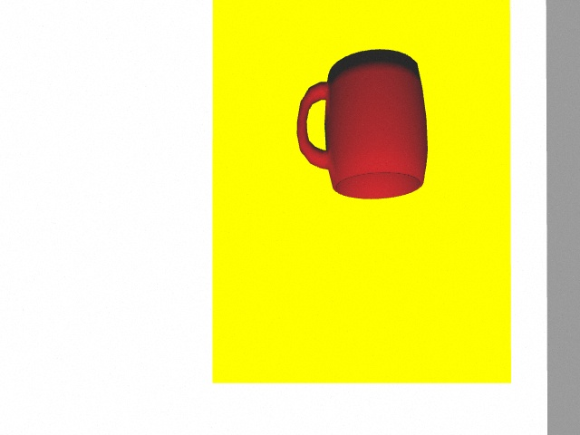
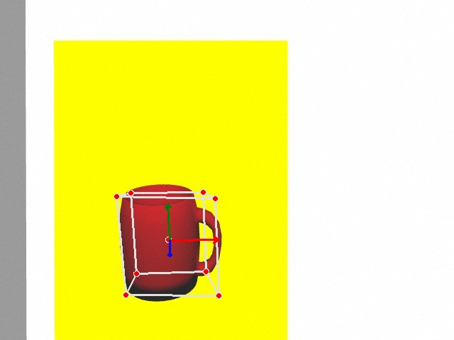
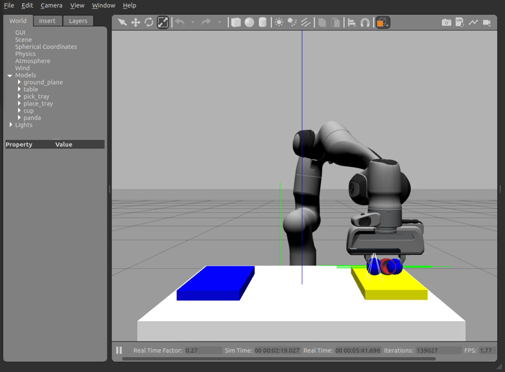

Creazione ambiente di lavoro
Inizialmente è stato creato un ambiente di lavoro (catkin) in ROS Noetic
(Nella cartella progetto)
source /opt/ros/noetic/setup.bash
mkdir -p catkin_ws/src
cd catkin_ws/src/
catkin_init_workspace
cd ..
catkin_make
source devel/setup.bash
Installazione dipendenze
Successivamente sono state installate tutte le varie dipendenze e packages attraverso il tutorial fornito dal
sito relativo al robot Franka Emika.
Oltre alla visualizzazione in Gazebo ed in RViz, è stato installato il Plugin MoveIt per facilitare i movimenti.
All'estremità del braccio è stato posto un sensore Realsense R200 affinchè si possano effettuare delle acquisizioni di nuvole di punti degli oggetti in Gazebo.
I link delle varie installazioni sono riportati nel settore relativo ai
Riferimenti.
Simulazione del robot
roslaunch panda_moveit_config demo_gazebo.launch
Avviando il file launch si avvia il simulatore Gazebo nel cui mondo troveremo i modelli di Franka Emika Panda, tavolo, lastre di appoggio, tazza, illuminazione basata sul sole ed il sensore Realsense R200.
Il tavolo è stato creato tramite un oggetto box, mentre la tazza è stata creata utilizzando il software Blender.
Inoltre verrà avviato il visualizzatore 3D RViz in cui è possibile visualizzare il robot e la nuvola di punti ricavata dal sensore Realsense R200.
Da RViz è possibile abilitare il Plugin MoveIt, avviato nel file launch, con cui si effettueranno i vari spostamenti.
Comandi del robot
rosrun moveit_commander moveit_commander_cmdline.py
MoveIt Plugin offre un pacchetto python che gestisce in maniera semplice
la pianificazione del movimento, il calcolo dei percorsi cartesiani ed altre funzionalità. In particolare, è stata utilizzata l'interfaccia
a riga di comando in cui sono state impartite le varie traiettorie che il robot effettua nell'esperimento.
use panda_arm
go forward/left/up/down/right/backward -distance-
Detection clouds points
Usando i comandi sopra citati si pone il manipolatore al di sopra dell'oggetto interessato (tazza) in modo da essere inquadrato dal sensore.
rosrun realsense_gazebo_plugin SavePointCloud
Attraverso questo script si riesce a ricavare un'immagine RGB dalla nuvola di punti.

Ora è possibile determinare la posa della tazza presente in
Gazebo attraverso
MediaPipe Objectron.
python3 cupobjectrondetection.py

Questo script ci restituisce un'immagine con la posizione della tazza nello spazio attraverso boundary box 3D ed il
relativo orientamento degli assi.
Approfondimento
Grasping
Una volta determinata la possibilità di prese dell'oggetto il robot viene posizionato al di sopra della tazza e attraverso l'imposizione di comandi è in grado di aprire le pinze.
rostopic pub --once /franka_gripper/move/goal franka_gripper/MoveActionGoal "goal: { width: 0.08, speed: 0.1 }"
Dopo aver aperto le pinze il robot inizia la discesa fino all'altezza della tazza, posizione dalla quale si effetua il grasping tramite la chiusura della pinza e l'applicazione della forza lavoro.
rostopic pub --once /franka_gripper/grasp/goal franka_gripper/GraspActionGoal "goal: { width: 0.04, epsilon:{ inner: 0.02, outer: 0.02 }, speed: 0.05, force: 5.0}"
Per verificare la tenuta della presa è possibile abilitare il 'contacts' in Gazebo che evidenzia i punti in cui è applicata la forza.
Per concludere la simulazione la tazza viene spostata sulla lastra blu, come è ripostato nei
risultati.
